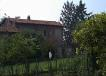

|
Dall'archivio
storico
fotografico della
Associazione
Culturale Zivido



|
Di
Carpianello abbiamo poche notizie; la più antica � del XIII secolo
ed � contenuta nell'elenco del Bussero, che nomina una chiesa dedicata
a San
Martino.
Questa dedica pu� far presumere ad una semplice cappella votiva,
eretta su un fondo agricolo al tempo della dominazione franca o
longobarda. Bisogna infatti considerare la notevole vicinanza del
paese al fiume Lambro, che comport� certamente lo stanziamento dei
Longobardi, i quali si divisero tutte le terre che scorrevano ai
lati del fiume.
Il Signore di Milano, Gian Galeazzo Visconti, nel 1386, per ricompensare
i considerevoli servizi del defunto maestro, Guglielmo De Villanis
da Pontremoli, fisico ducale, don� ai suoi figli vari beni e, tra
questi, alcuni possedimenti a Carpianello.
Gasparolo Brivio risulta essere intestatario, nel 1403, d'una investitura
enfiteutica su questi beni. Altre notizie di Carpianello e dei suoi
edifici le abbiamo dai documenti di consegna dei fondi sino al secolo
XIX, tratti dall'archivio Brivio.
Nel borgo vi erano diverse aziende agricole, quali la Corte dei
Grancini, Corte di Volpi, Corte di Casa e Corte Misericordia, delle
quali le ultime due erano le più grandi.
Il complesso di edifici denominato Corte di Casa, quello posto sulla
sinistra della Chiesa attuale, � chiaramente citato nei documenti
come il nucleo più antico di Carpianello, nominato sin dal XIV secolo.
Il complesso era originariamente più ampio dell'attuale perch� comprendeva
una Casa da Nobile, poi parzialmente demolita, in cui viene detto
abitavano i Brivio, padroni del fondo. Vi era inoltre un giardino,
una modesta corte agricola e due spazi di corte disposti a U, adibiti
ad abitazione. In questo complesso vi era una locanda, citata nei
documenti del Cinquecento e Seicento, cos� descritta: "...
Sedimen unum in dicta terra in quo fiebat Hospitium" (15 settembre
1531).
Da alcuni contratti d'affitto apprendiamo l'esistenza in Carpianello
di vari artigiani e uno di questi, stipulato il 20 ottobre 1697
specifica: "... altra casa da pigionante detta del Legnamaro
..." La presenza di un negozio per la vendita di generi alimentari
ci viene fornita il 31 ottobre 1797: "... luogo terreno ed
uso di bottega con uscio ... bancone annesso con parapetto di cotto
coperto d'un assone ...".
Dal censimento effettuato nel 1537 sappiamo che vi abitava Monsignor
Marco Antonio Cojro, probabilmente vi aveva una casa estiva; fittabile
per Francesco Brivio fu il bresciano Giuseppe de Gandolfi e i suoi
massari Venerio da Vino e Domenico Milano. Altri massari per i beni
posseduti dal Magnifico Giovanni Maria de Bianchi, risultano essere
Bernardino Bresciano e Giovan Battista Garbagnati; taverniere dell'osteria
dei Brivio era Togno da Pajna, e il soldato rappresentante l'autorit�
era Giorgio Delfinoni; Console della Comunit� Giacomo de Valsolda.
Carpianello fu Comune sino al 1844 e di quel tempo abbiamo qualche
dato. Nel 1722 il Console era Antonio Tenella; vi era un'osteria
di propriet� del marchese Recalcati, un mulino ed un torchio.
Sappiamo inoltre di un caseggiato detto il Castelletto, ora inabitato, con orto.
Sempre alla data del 1722 � scritto nei dati censuari che nelle
propriet� Recalcati abitano Pietro matto, che paga 200 lire d'affitto
per casa e terreno; Giovanni Tonella paga 51 lire e venti centesimi;
Bartolomeo Pelizzona 28 lire; Antonio Tonella 52 lire e venti centesimi;
il Gioia gode casa e terreno per carit�.
Questi pigionanti servivano a lavorare alle riparazioni del Lambro
come campari, pagando l'affitto con le loro giornate lavorative
e quando non lavoravano, restavano in debito, come lo sono.
Nel 1749 vi erano 231 abitanti e la carica di Console era affidata
a Giovanni Andrea Bellina.
Un documento del 4 febbraio 1750 consente di riconoscere i sistemi
amministrativi in uso allora nelle piccole comunit�: "... La
Comunit� di Carpianello, Pieve di San Giuliano, Ducato di Milano,
e per essa li Maggiori Estimati, Reggenti, Consoli e uomini, essendosi
prima esposte le cedole e poi provveduto al suono della campana
per convocare il popolo, eleggono deputato per anni tre a loro esattore
il Signor Giovan Battista Martini, abitante a Locate. Egli sarà
tenuto a pagare, con contribuzione, il Sale Camerale, il Censo,
il Perticato Rurale e qualsiasi mandato legittimo ed anche tutte
le Fazioni militari straordinarie che la Comunit� sia obbligata
a pagare ..."
Nel 1754 il Comune di Carpianello viene sciolto ed aggregato a quello
di Zivido.
Relativamente a quegli anni si conoscono le spese del bilancio comunale
ammontanti: nel 1745, a lire 596,15 ed a lire 920,5 nel 1747, somma,
questa, maggiore delle precedenti a causa di una sovrimposta militare
di lire 124.
I beni di Carpianello furono dati in dote, nel 1660, a Clemenzia
Brivio, che spos� il Marchese Recalcati e questi ne divenne il nuovo
proprietario. I beni di Carpianello ritornarono in propriet� dei
Brivio nel 1863, quando Giacomo Brivio Sforza li riacquist� dal
Principe Rasini.
(da Luciano Previato "San Giuliano Milanese, una storia da
raccontare" 1989)
|
|